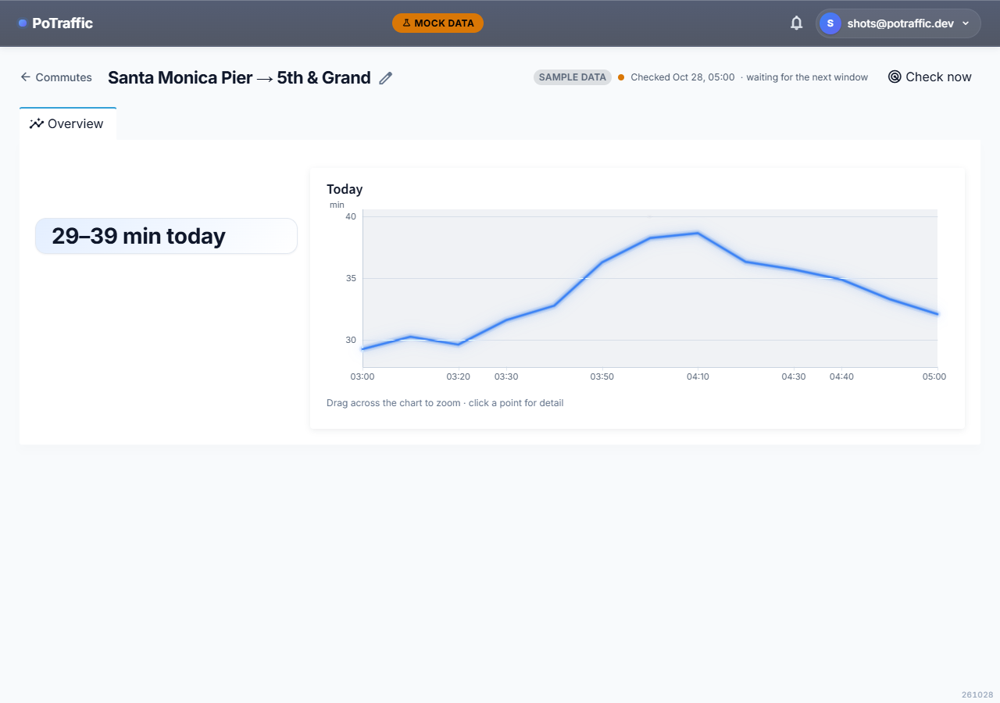
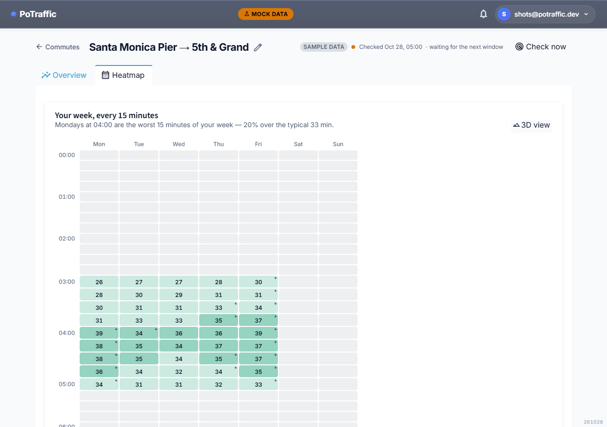
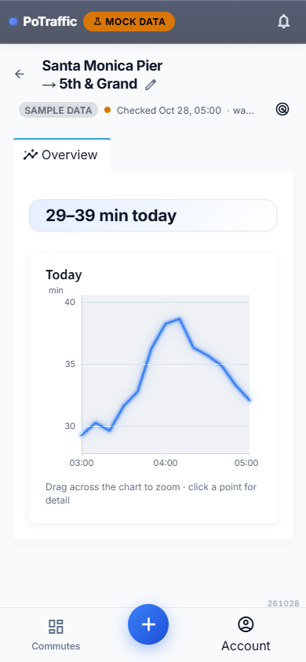
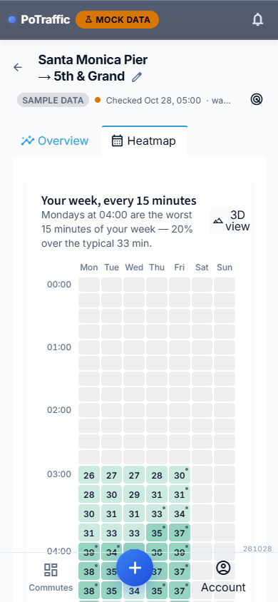

Route page: Heatmap tab
2026-10-28. Shown on the sample commute. "Before" is commit 81e21b7 with default settings.
Tabs
- newA Heatmap tab on every commute, always shown: all seven days down the side in 15-minute slots (96 rows, midnight to midnight), with the 3D view toggle.
- changedThe "Weekly pattern" switch is gone from Settings → Advanced panels. Weather impact moves to its own Weather tab, still behind its switch. The old History tab is gone.


On a phone

